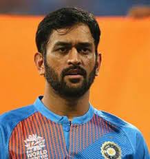
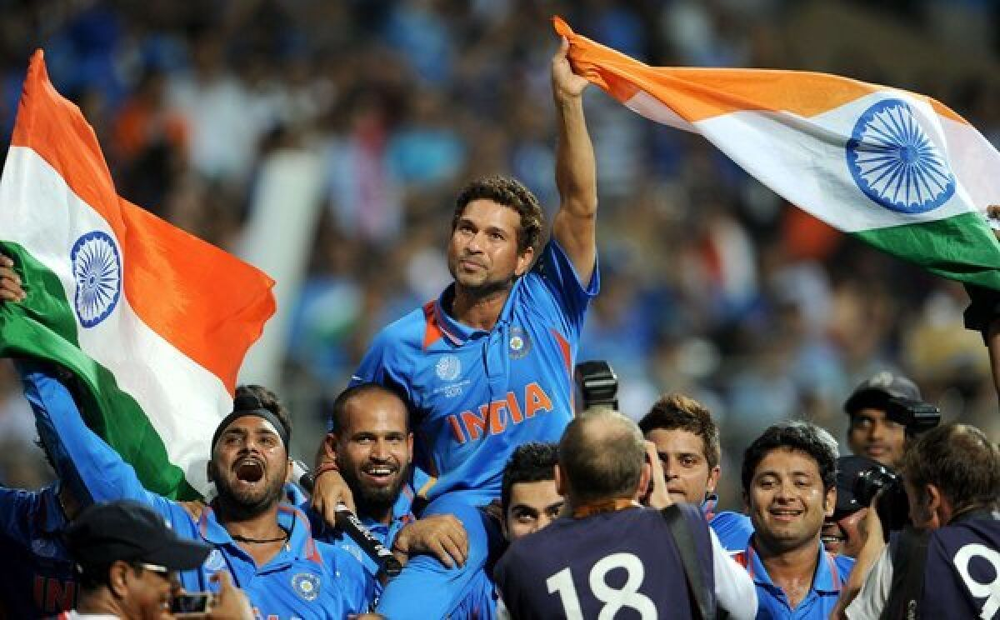
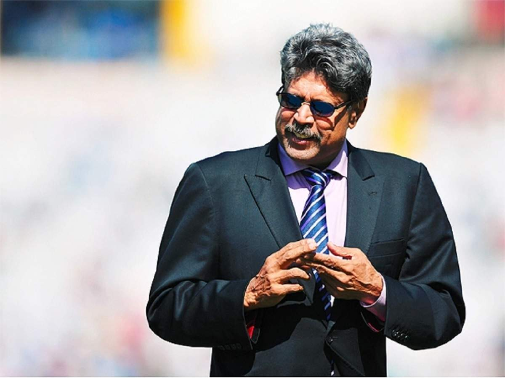

<!DOCTYPE HTML>
<html lang="en"></html>
<HTML>
<head>
    <link rel="stylesheet" href="style4.css">
    <meta charset="UTF-8">
    <meta http-equiv="X-UA-Compatible" content="IE=edge">
    <meta name="viewport" content="width=device-width, initial-scale=1.0">
<TITLE>CRICKET</TITLE>
</HEAD>
<body>
    <center><h1><p><font size="15"><font color="cyan">GREATEST CAPTAINS OF ALL TIME!!!</font></font></p></h1></center>
    <section class = "vk">
        <div class = "vk">
        <div class="main">
            <div id="container1">
            
            <div class="vk-text">
                <div class="square">
                    <span></span>
                    <span></span>
                    <span></span>
                    <div class="content">
                <h1><font size="6">VIRAT KOHLI</font></h1>
                <p><font size="4.5">Virat Kohli is an Indian cricketer and former captain of the Indian national team. He is considered one of the best batsmen in the world and holds several records in cricket.</font></p>
                    </div>
                </div>
            </div>
        </div>
        </div>
        </div>
    
        
        <section class = "msd">
            <div class = "msd">
            <div class="main2">
                <div id="container2">
                
                <div class="msd-text">
                    <div class="square">
                        <span></span>
                        <span></span>
                        <span></span>
                        <div class="content">
                    <h1><font size="6">MAHENDRA SINGH DHONI</font></h1>
                    <p><font size="4">M.S. Dhoni,Indian cricketer whose rise to prominence in the early 21st century culminated in his captaincy of the Indian national team that won the one-day Cricket World Cup in 2011.</font></p>
                        </div>
                    </div>
                </div>
            </div>
            </div>
            </div>
            <section class = "st">
                <div class = "st">
                <div class="main3">
                    <div id="container3">
                    
                    <div class="st-text">
                        <div class="square">
                            <span></span>
                            <span></span>
                            <span></span>
                            <div class="content">
                        <h1><font size="6">SACHIN TENDULKAR</font></h1>
                        <p><font size="2.7">He is a skilled batsman also called Master blaster or God of cricket by fans globally.made international debut in 1989,a former Indian cricketer often recognized for his highest scored runs in international cricket.</font></p>
                            </div>
                        </div>
                    </div>
                </div>
                </div>
                </div>
                <section class = "kd">
                    <div class = "kd">
                    <div class="main4">
                        <div id="container4">
                        
                        <div class="kd-text">
                            <div class="square">
                                <span></span>
                                <span></span>
                                <span></span>
                                <div class="content">
                            <h1><font size="6">KAPIL DEV</font></h1>
                            <p><font size="3">Dev captained the Indian cricket team that won the 1983 Cricket World Cup, and became the first and youngest Indian captain to win the Cricket World Cup.As a technical bowler, he was known as the "Haryana hurricane". </font></p>
                                </div>
                            </div>
                        </div>
                    </div>
                </div>
            </div>  

</body>
<footer>
    <p>
    <a href="index.html">MAIN PAGE</a><pre>     </pre>
    <a href="cars.html">CARS PAGE</a><pre>     </pre>
    <a href="MOVIES.html">SERIES PAGE</a>
    </p>
    </footer> 
</HTML>